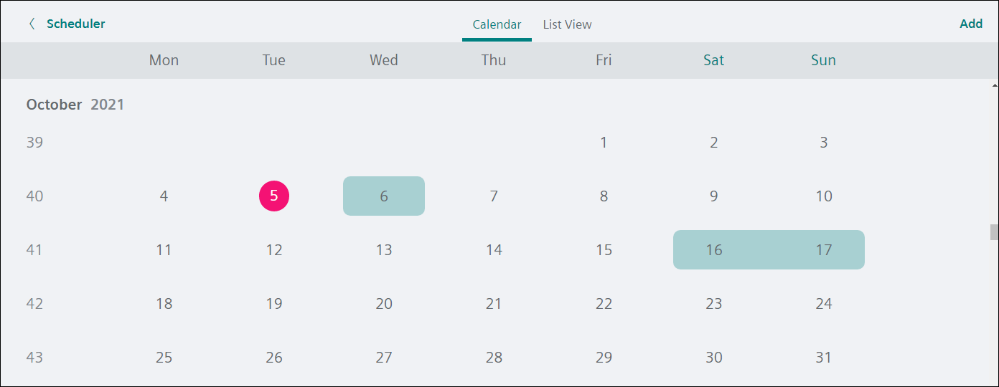
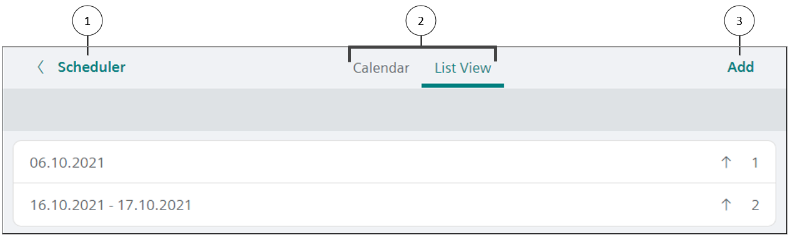
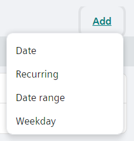
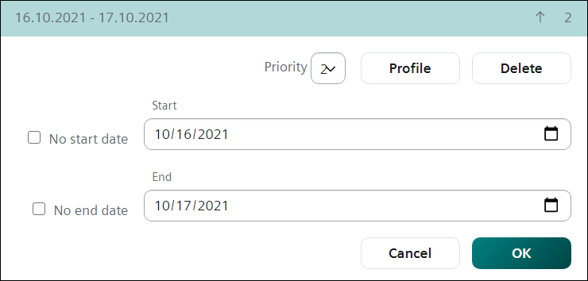

例外时间表
例外时间表用于管理与每周时间表的偏差。
- When working online, exception dates can be added directly to the Scheduler object.
- Calendar objects display in the associated Scheduler object under Exceptions.
Working with exceptions for a Scheduler object
- In Exceptions mode, click Exceptions to display a calendar view of exceptions for the current month.
- To display a list of all exceptions for the schedule, click List View.


① | Scheduler按钮 |
② | Calendar和List View按钮 |
③ | Add按钮 |
Adding an Exception
- While in the Exceptions calendar, click Add in the upper right corner of the Calendar or List View.
- The Add exception dialog box displays.

- From the Type drop-down, select Date, Date range, Weekday or Recurring and click OK.
- Do one of the following:
- For Date or Date range, enter the desired date(s).
- For Weekday or Recurring, selected the desired values from the drop-down lists.
- Select the Exceptions priority.
- Click Save to add the new exception.
Deleting an Exception
- Select Exceptions and click List View to display all exceptions for the schedule.
- Select the exception to delete.
- Click Delete and then click Delete again to confirm the action.
